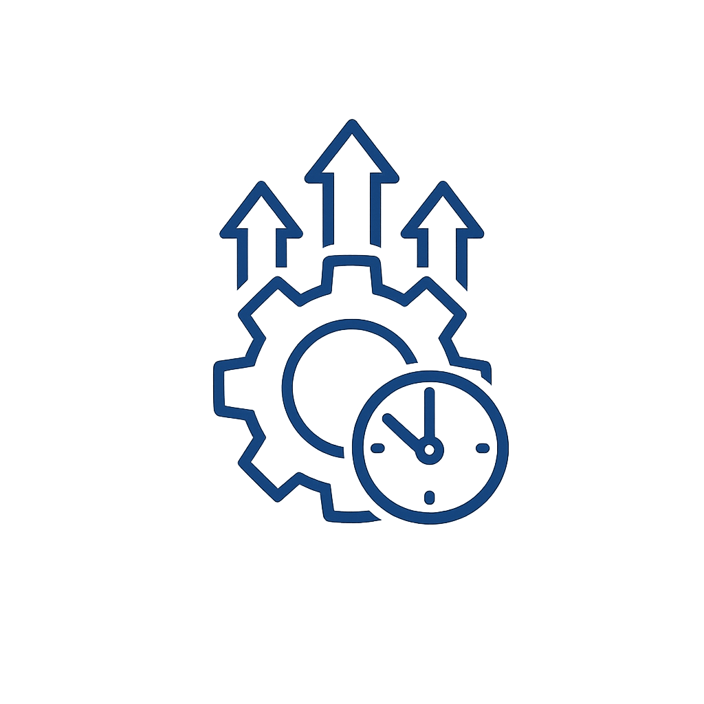

SETUP
Configure Once
Tell us your preferences and risk level. We structure everything so the bot can run autonomously on Polymarket—no ongoing input from you.
Simple onboarding
One-time setup; we handle the technical side.
You stay in control
Set your parameters; the system runs within them.
